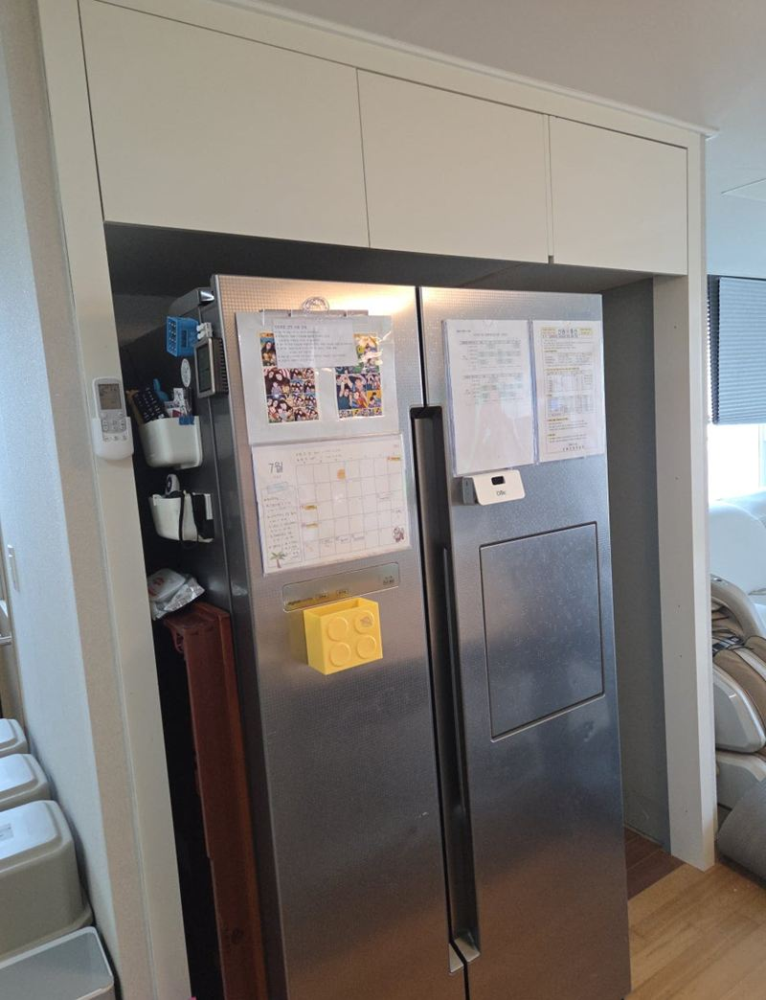
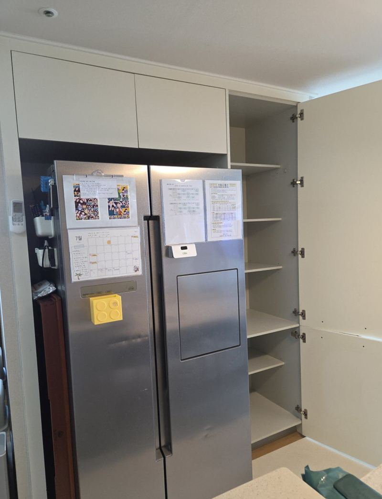
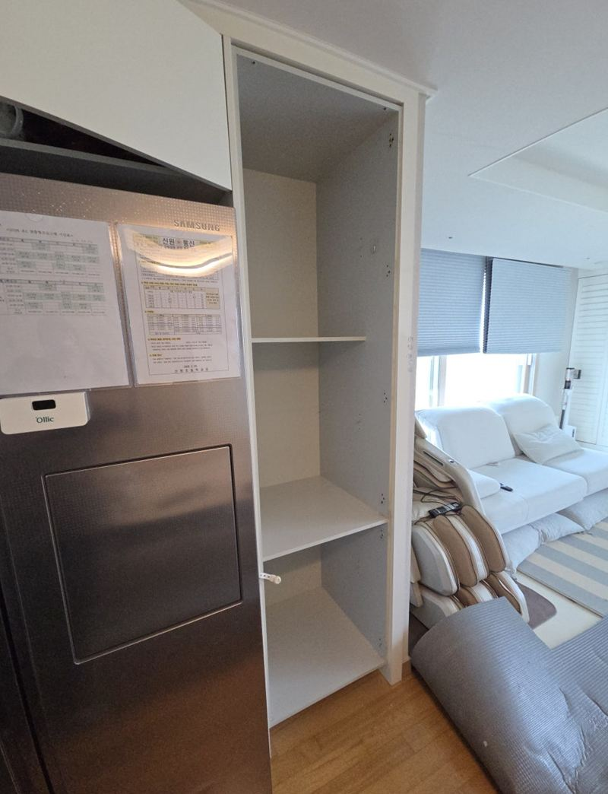
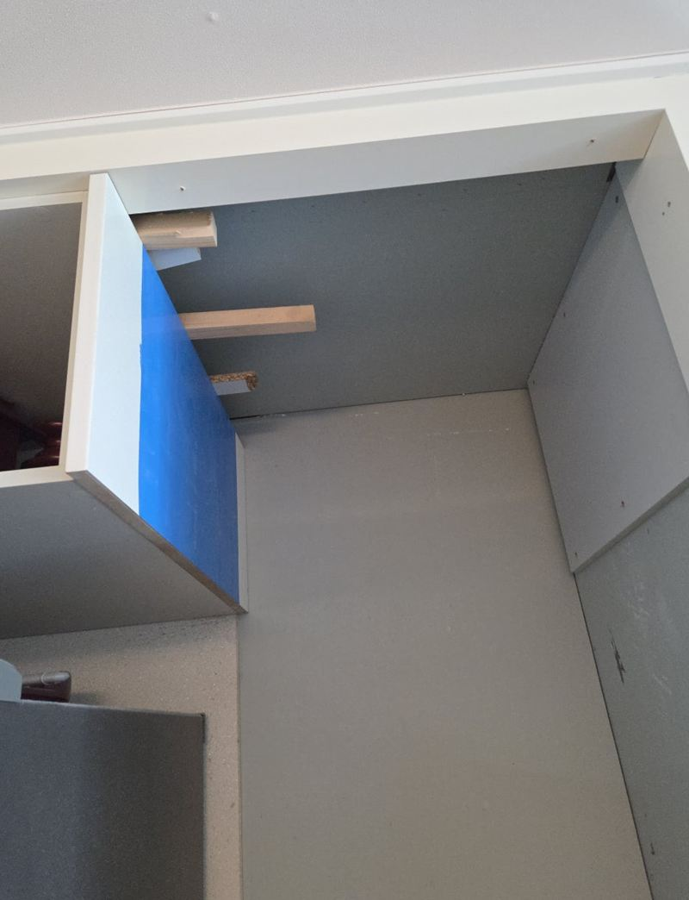
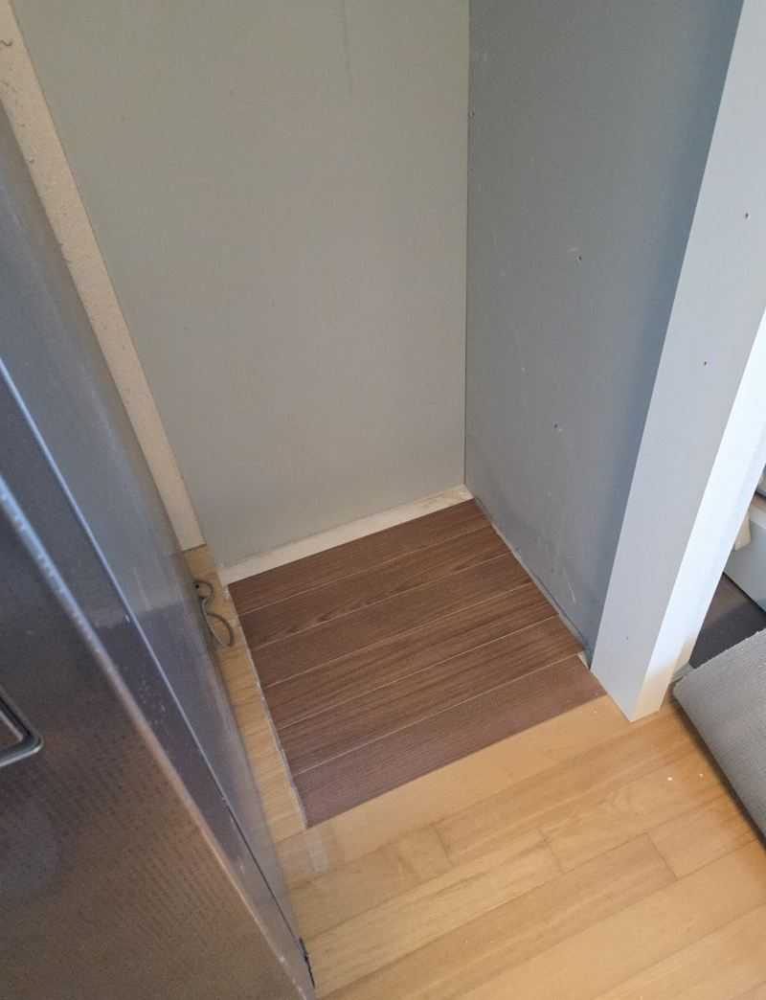
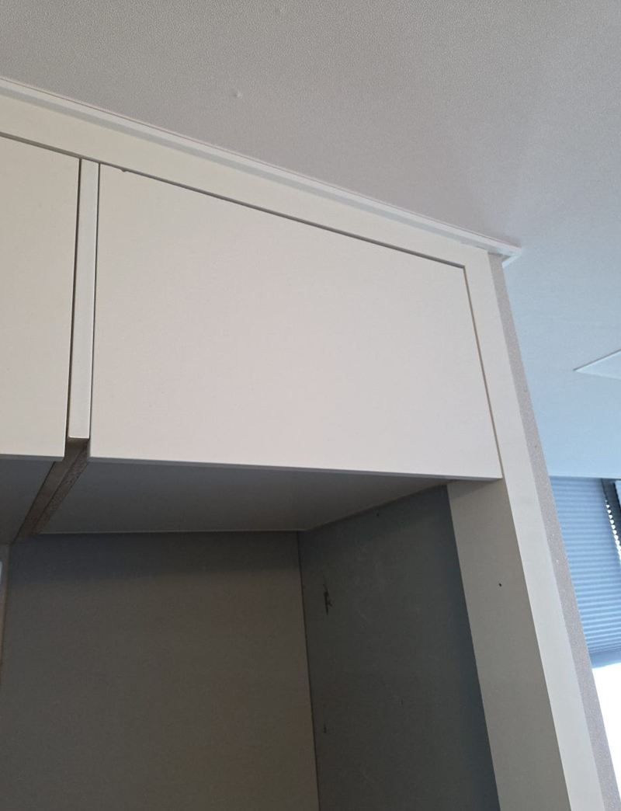
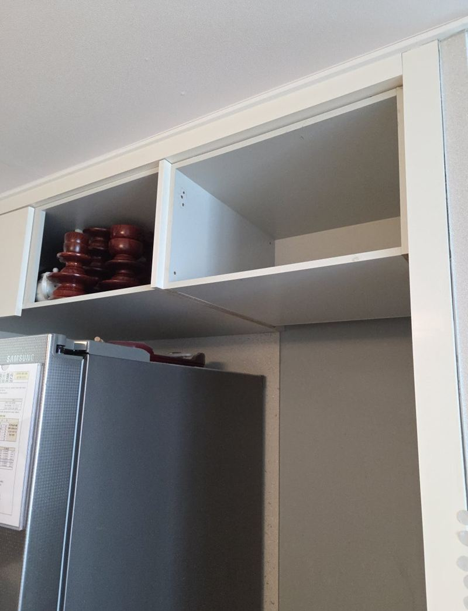

고양 키큰장 리폼으로 상부장 만드는 방법


리폼 전리폼 후← 밀어서 전후 비교 →
냉장고 옆으로 천장부터 바닥까지 길게 내려온 키큰장 때문에 주방이 답답해 보인다는 집이었어요. 수납은 아쉬우니 다 없애지는 말고, 아래만 비워 달라고 하셨어요. 키큰장을 해체해 위쪽만 남기고, 처지지 않게 천장 쪽을 보강해 상부장으로 다시 세웠어요.
| 현장 | 고양 덕양구 삼송 아파트 주방, 냉장고 옆 |
|---|---|
| 요청 | 아래 공간은 넓게, 위쪽 수납은 유지 |
| 한 일 | 키큰장 해체 → 높이 맞춰 절단 → 목대 보강 → 천장 고정 → 문짝 재설치 → 하부 마감 |
| 맞춘 것 | 옆 수납장과 상단 라인, 마루 높이 |
키큰장을 상부장으로 바꾸려면
키큰장을 그냥 짧게 자르면 끝날 것 같지만, 원래는 바닥이 받쳐 주던 장이에요. 아래를 없애면 장 전체 무게를 천장과 벽이 받아야 해요. 그래서 자르기 전에 남길 높이, 옆 장과의 라인, 천장에 박을 수 있는 자리를 먼저 확인했어요.
| 확인할 것 | 이유 |
|---|---|
| 냉장고장 폭 | 새 냉장고가 들어갈 너비가 나오는지 |
| 옆 장 높이 | 리폼 후 상단 라인 맞춤 |
| 천장 고정면 | 상부 처짐 예방 |
| 바닥 높이 | 아래 공간 마감 높이 |


처지지 않게 하는 목대 보강
위에만 매달리는 장은 시간이 지나면 앞으로 기울거나 처질 수 있어요. 천장과 벽에 목대를 먼저 단단히 대고, 그 위에 장을 걸어 무게가 여러 곳으로 나뉘게 했어요. 수평계로 앞뒤·좌우를 맞춘 뒤 고정했어요.


기존 자재를 살려 다시 짜기
키큰장 판재가 상태가 좋아서 다시 썼어요. 잘린 면은 깔끔하게 마감해야 새 장처럼 보여서, 절단면을 정리하고 문짝도 줄어든 높이에 맞춰 다시 달았어요. 아래 비워진 바닥은 마루와 높이가 어긋나지 않게 정리했어요.


이런 주방에서 키큰장 리폼을 많이 해요
- 냉장고를 큰 걸로 바꾸려 해요옆 키큰장 폭을 줄이거나 아래를 비워 공간을 만들어요.
- 주방이 답답해 보여요바닥까지 내려온 장을 줄이면 시선이 트여요.
- 아래에 정수기·쓰레기통 자리가 필요해요위 수납은 남기고 아래만 비우면 돼요.
- 버리긴 아까운 장이에요판재를 살려 다시 짜면 새 장을 들이는 것보다 덜 들어요.
키큰장 리폼 전에 재 두면 좋아요
- 냉장고 폭과 높이새로 들일 냉장고 치수까지 알려주시면 좋아요.
- 천장 높이상부장 길이를 정하는 기준이에요.
- 아래에 둘 물건정수기·쓰레기통 등 넣을 물건 크기를 알려주세요.
키큰장 리폼 질문
기존 키큰장을 다시 쓸 수 있나요?
판재 상태와 크기가 맞으면 다시 써요. 절단면을 깔끔하게 마감하는 게 관건이에요.
냉장고 옆 폭만 넓힐 수도 있나요?
가운데 판을 빼서 폭을 넓히는 방법이 있어요. 구조에 따라 보강 방법이 달라져요.
상부장에 무거운 그릇을 넣어도 되나요?
목대 보강을 하면 일반 그릇 수납은 괜찮아요. 아주 무거운 것은 아래 칸에 두시는 게 좋아요.
천장이 석고보드면 고정이 되나요?
석고만으로는 약해서 뒤쪽 구조재를 찾거나 보강재를 대고 고정해요.
문짝 색을 바꿀 수도 있나요?
새 문짝으로 바꾸면서 색을 바꿀 수 있어요. 샘플로 골라요.
작업 중 냉장고를 빼야 하나요?
작업 공간 확보를 위해 잠시 옮겨야 할 수 있어요. 미리 비워 두시면 빨라요.
리폼 후 남은 자재는 가져가나요?
쓰고 남은 판재와 부속은 정리해서 수거해요.
다른 싱크대·수납장 현장
키큰장 전체와 냉장고 자리, 원하는 모양을 알려주세요.
전화 상담 010-4517-9872